2.007 Robot Design
Spring 2026 · MIT 2.007 Design and Manufacturing I
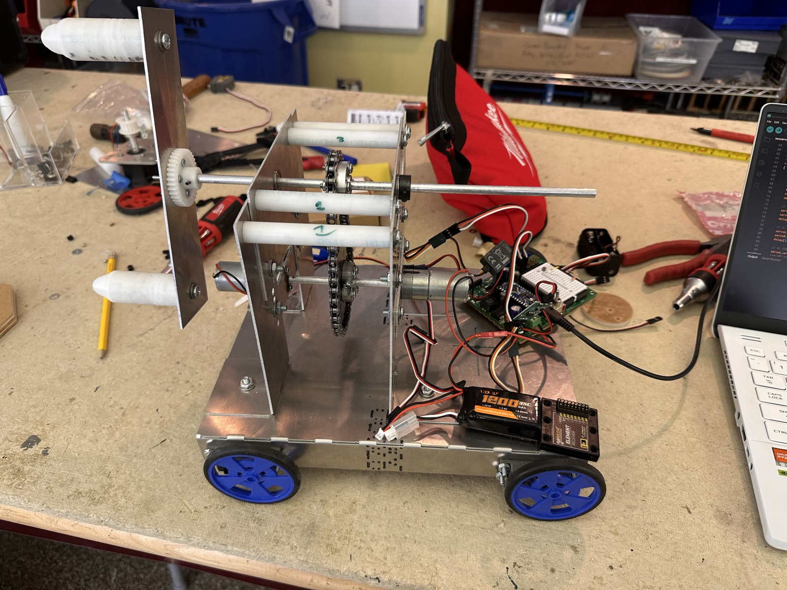
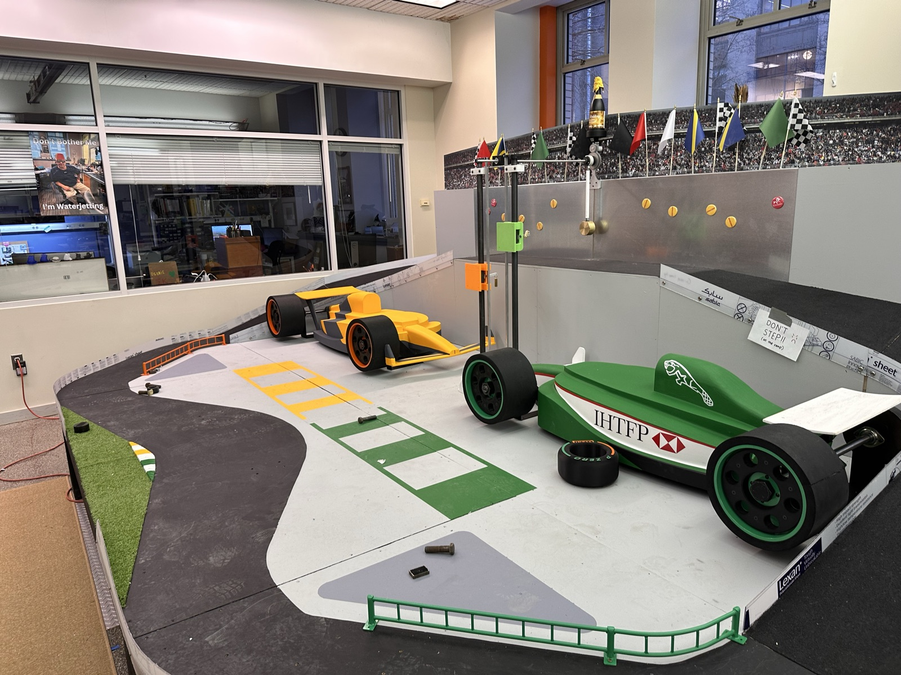
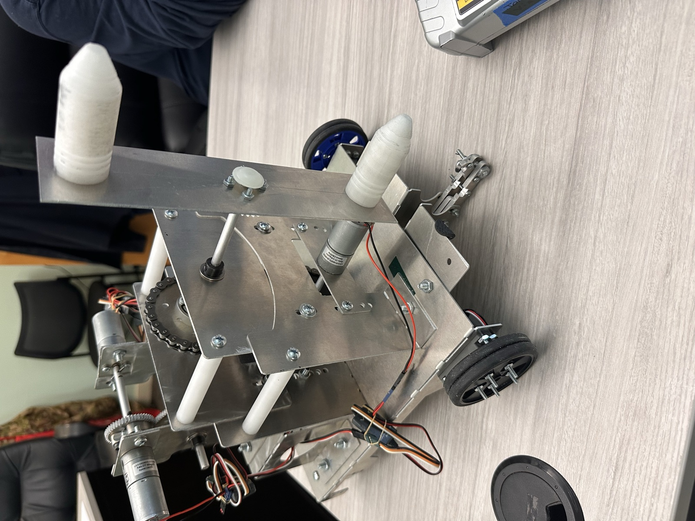
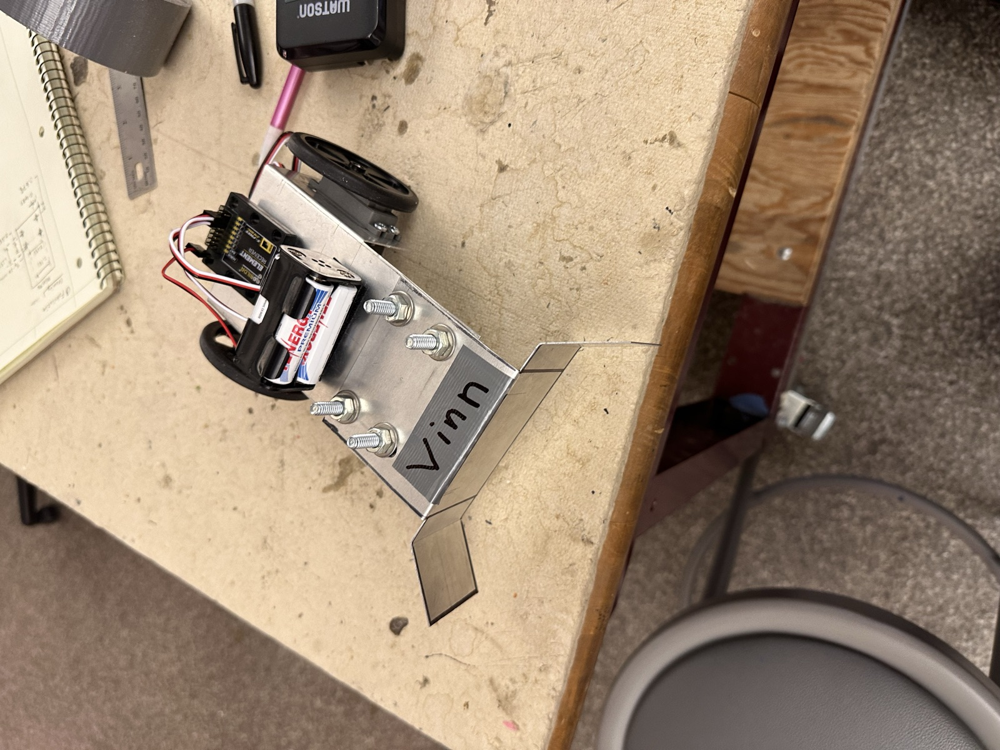
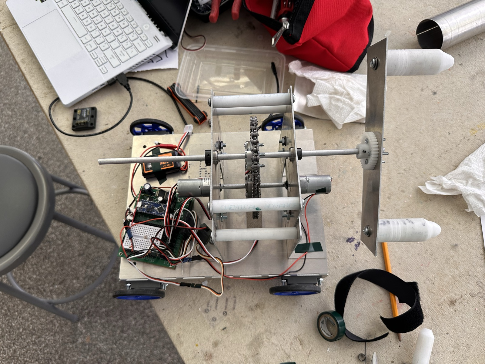
Summary: Designed and built a robot from scratch for the 2.007 Design and Manufacturing I competition, where each robot plays a Formula 1 themed game on a shared table. My robot is a sheet-metal, four-wheeled platform with a chain-and-sprocket drivetrain, a geared arm, and onboard electronics with a microcontroller, battery and radio receiver. I took it from early prototypes through fabrication to testing on the competition table.
Skills
- Mechanism design: chain and sprocket transmission, gearing, geared arm
- Sheet-metal fabrication and assembly
- Embedded electronics: motors, servos, battery, microcontroller, radio control
- Iterative prototyping and testing
Technical details
Early prototypes. I started with a simple wheeled chassis to test the drive layout, using a bent sheet-metal front plate and a caster, then moved to a first full prototype with the battery pack, electronics and wheels mounted on a folded sheet-metal body.
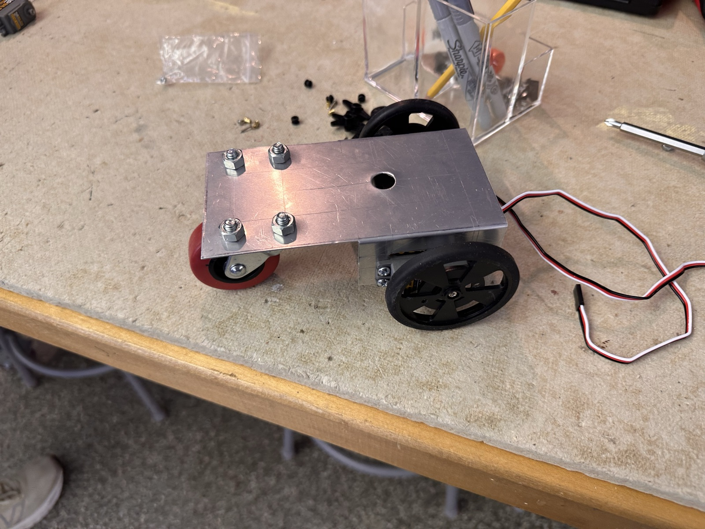
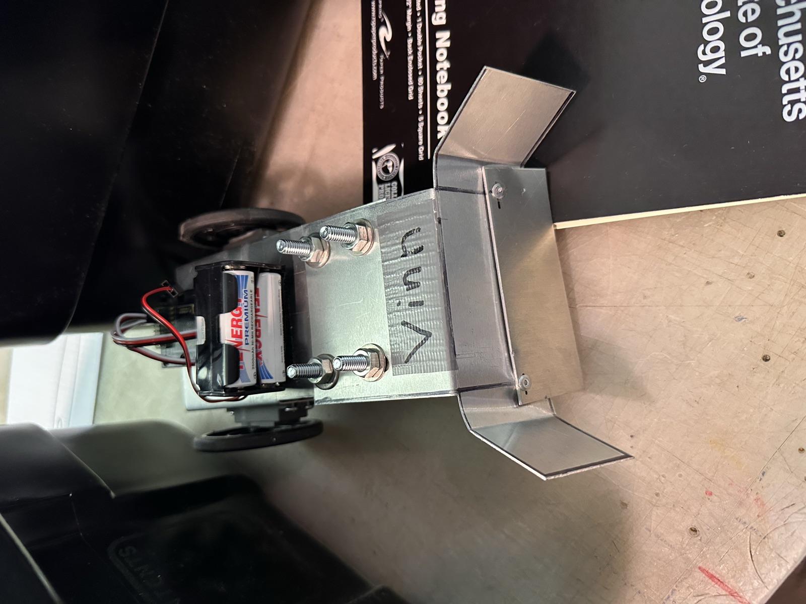
The first test chassis (left) and the first full prototype (right).
Final chassis and mechanism. The final robot uses sheet-metal side walls and a base, a chain-and-sprocket transmission driving rollers, and an arm with a gear and tips that reach out to the game elements. Parts were cut from sheet metal, bent and fastened together.
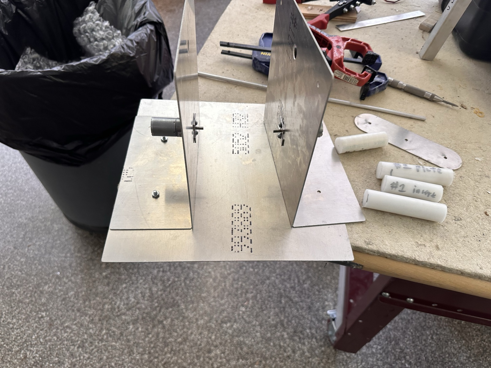
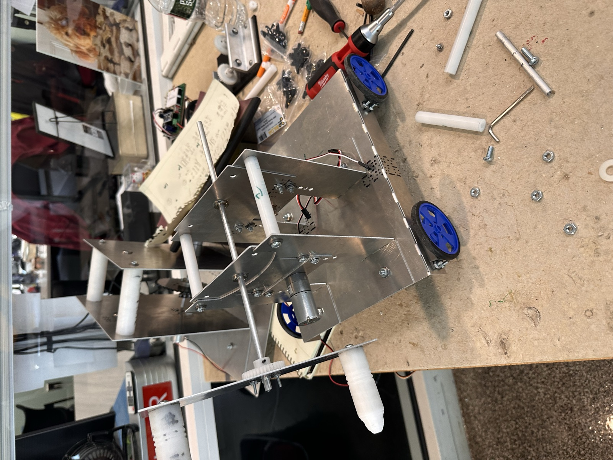
Sheet-metal parts during fabrication (left) and the robot mid-assembly (right).
Electronics and code. The robot carries a microcontroller, a battery and a radio receiver, wired to the drive motors and servos. I wrote and debugged the control code on a laptop at the bench while testing the mechanism.
Attachment prototypes. I built several small bracket plates with fasteners and a latch-style element, and tested them against the rails on the competition table, iterating between versions.
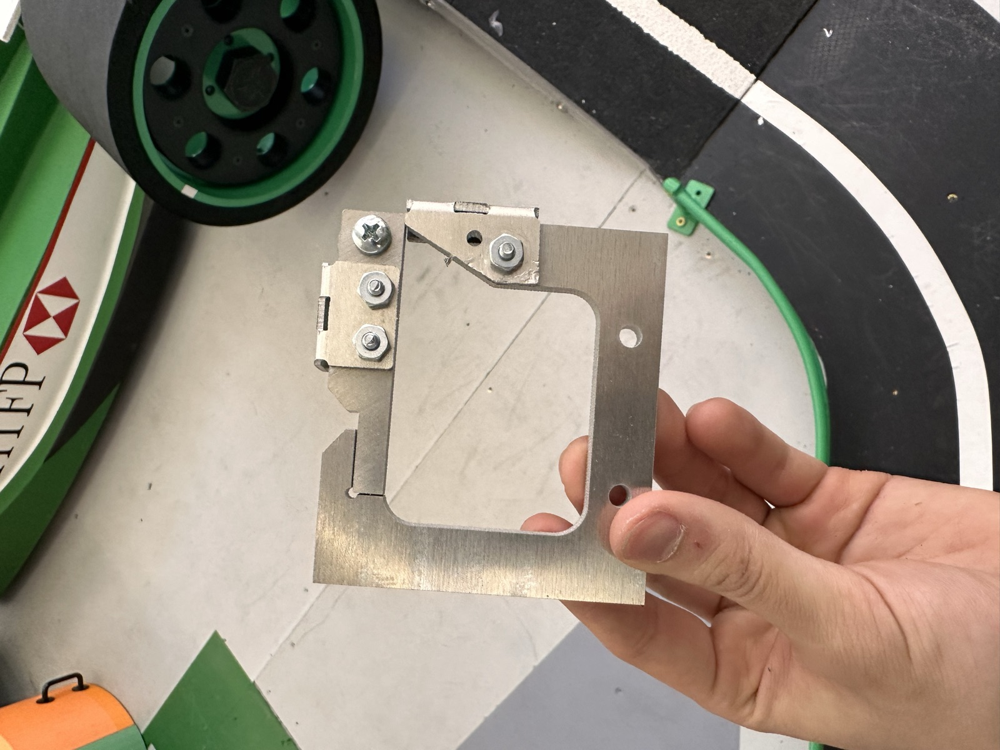
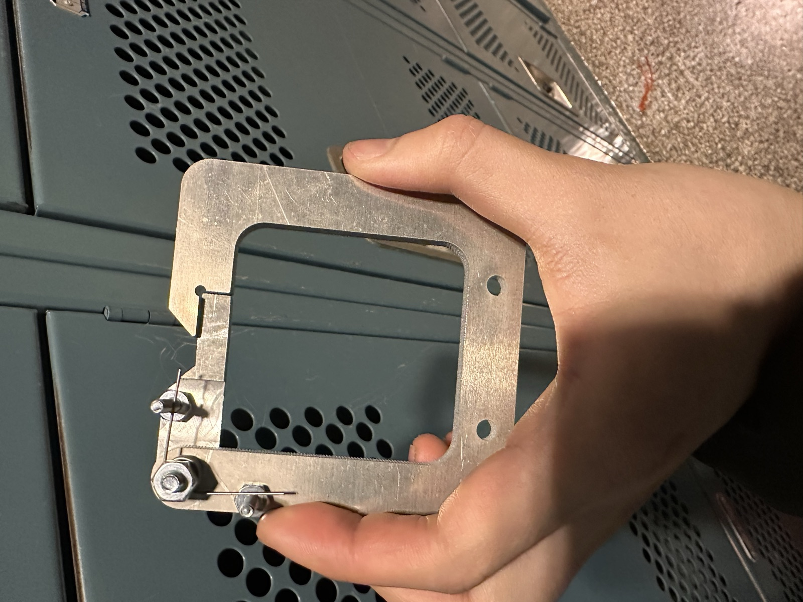
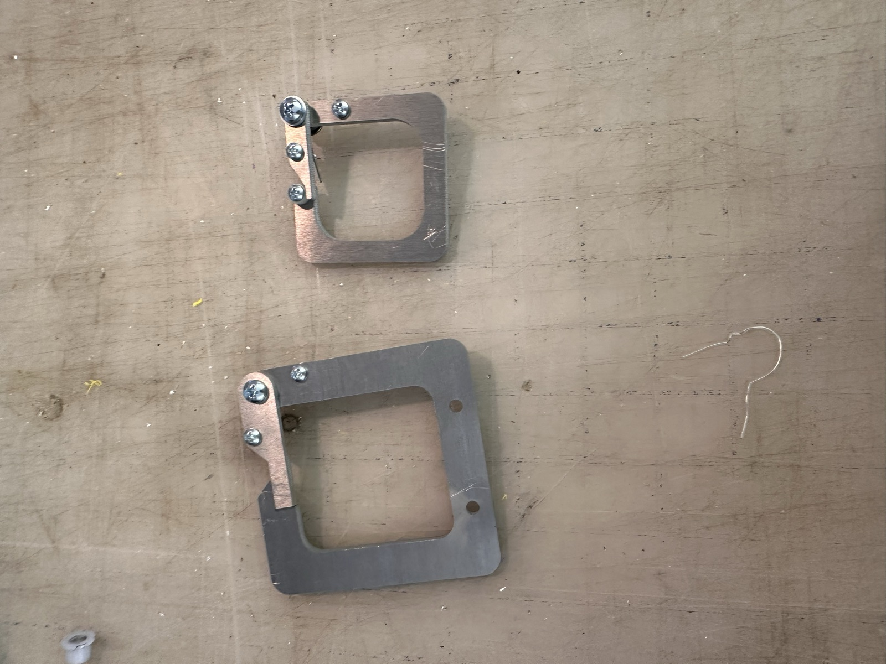
Bracket prototypes, from the first version to later iterations.
Testing on the table. I tested the robot on the competition table to check the drivetrain, the arm's reach and how it interacts with the game elements.